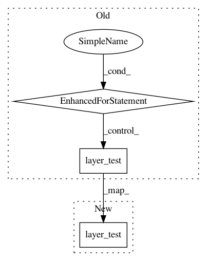

5f94aef6685289c5451f24bcfdb2ab24e2bc87df,tests/keras/layers/convolutional_test.py,,test_conv2d_transpose,#,168
Before Change
num_row = 5
num_col = 6
for batch_size in [None, num_samples]:
for padding in _convolution_paddings:
for strides in [(1, 1), (2, 2)]:
if padding == "same" and strides != (1, 1):
continue
layer_test(convolutional.Deconvolution2D,
kwargs={"filters": filters,
"kernel_size": 3,
"padding": padding,
"strides": strides,
"data_format": "channels_last"},
input_shape=(num_samples, num_row, num_col, stack_size),
fixed_batch_size=True)
layer_test(convolutional.Deconvolution2D,
kwargs={"filters": filters,
"kernel_size": 3,
"padding": padding,
"data_format": "channels_first",
"kernel_regularizer": "l2",
"bias_regularizer": "l2",
"activity_regularizer": "l2",
"kernel_constraint": "max_norm",
"bias_constraint": "max_norm",
"strides": strides},
input_shape=(num_samples, stack_size, num_row, num_col),
fixed_batch_size=True)
@pytest.mark.skipif(K.backend() != "tensorflow", reason="Requires TF backend")
@keras_test
def test_separable_conv_2d():
num_samples = 2
After Change
input_shape=(num_samples, num_row, num_col, stack_size),
fixed_batch_size=True)
layer_test(convolutional.Deconvolution2D,
kwargs={"filters": filters,
"kernel_size": 3,
"padding": padding,
"data_format": "channels_first",
"kernel_regularizer": "l2",
"bias_regularizer": "l2",
"activity_regularizer": "l2",
"kernel_constraint": "max_norm",
"bias_constraint": "max_norm",
"strides": strides},
input_shape=(num_samples, stack_size, num_row, num_col),
fixed_batch_size=True)
@pytest.mark.skipif(K.backend() != "tensorflow", reason="Requires TF backend")
@keras_test
In pattern: SUPERPATTERN
Frequency: 3
Non-data size: 3
Instances
Project Name: keras-team/keras
Commit Name: 5f94aef6685289c5451f24bcfdb2ab24e2bc87df
Time: 2017-03-04
Author: francois.chollet@gmail.com
File Name: tests/keras/layers/convolutional_test.py
Class Name:
Method Name: test_conv2d_transpose
Project Name: keras-team/keras
Commit Name: 6fb506979a4074e3b935ce22999311c22f6dce6a
Time: 2018-09-28
Author: ybliang8@gmail.com
File Name: tests/keras/layers/advanced_activations_test.py
Class Name:
Method Name: test_relu
Project Name: keras-team/keras
Commit Name: 9405be8f838f44cb9cd8924bbf7604de880ada6a
Time: 2017-03-26
Author: joelthchao@gmail.com
File Name: tests/keras/layers/local_test.py
Class Name:
Method Name: test_locallyconnected_1d